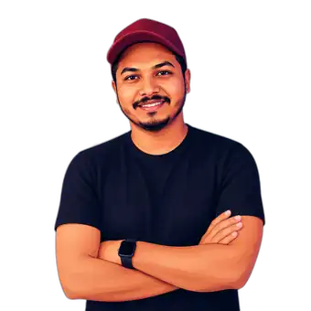

Environmental Optical Sensing
Real-Time Photonic Readout of Phenol Concentration
A SiO2/TiO2 cavity converts phenol concentration into a near-linear wavelength shift with approximately 540 nm/RIU sensitivity.
Assistant Professor, Chandigarh University
Physics | Computational Photonics | Optical Sensing | Multiphysics and AI-Assisted Modelling
Physicist working on photonic structures, THz and orbital-angular-momentum systems, optical sensors, coupled numerical models, scientific software, and data-driven design methods.

54+ International publications,854 Citations,16 h-index,21 i10-index,2 Published patents
Photonic crystal fibres, resonant structures, multilayer systems, mode analysis, dispersion and confinement engineering.
Low-loss multimode THz guidance, orbital-angular-momentum transmission, bending tolerance and communication architectures.
Photonic-crystal, SPR, refractive-index, biochemical, thermal and material-sensitive sensing platforms.
Electromagnetic, structural, thermal and coupled finite-element models for scientific applications.
Surrogate models, deep-learning prediction, optimisation, scientific data analysis and digital-twin methods.
Solid-state batteries, lithium dendrite suppression, energy-storage materials, glasses, nanomaterials and composites.
A SiO2/TiO2 cavity converts phenol concentration into a near-linear wavelength shift with approximately 540 nm/RIU sensitivity.
A scythe-shaped bilayer metasurface uses interlayer rotation and spacing to tune circular dichroism.
A dual-ring fibre supports high-purity modes near 1.55 µm with low loss and strong bend and fabrication tolerance.
Established that interfacial voids form before lithium dendrites and showed how metallic interlayers can delay failure.
Experimental and numerical research on sensors, energy-storage devices and AI-based surrogate models.
Developed a digital-twin platform using OpenCARP, ParaView, Python, LS-DYNA, FEA and machine learning.
Designed THz photonic fibres for high-order vortex modes using FEM, multiphysics simulation and AI-assisted optimisation.
Worked on lithium dendrite suppression and membrane-conductivity measurement, contributing to a Nature Materials publication.